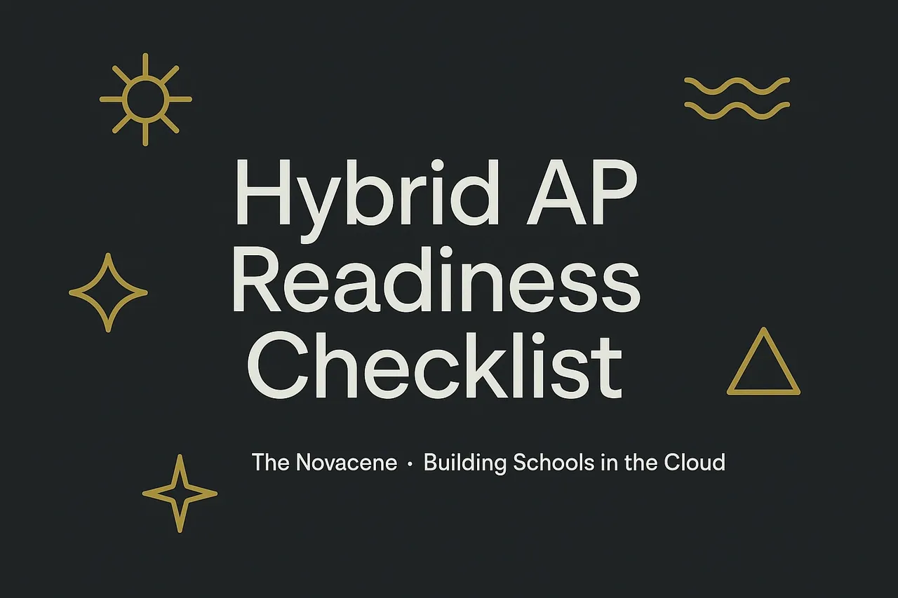

Compliance Is the Moat

A Practical Playbook for Trauma-Aware, Ofsted-Ready Hybrid Schooling
Hybrid schooling is not a content problem. It’s a safety, trust, and continuity problem that happens to use technology. That’s why the organisations growing right now aren’t the ones with the biggest video library — they’re the ones that treat compliance as design, not paperwork.
What changed
Across England, inspection and commissioning have converged. Ofsted’s stance on safeguarding, KCSIE 2025’s online-safety emphasis, and LA budget pressure have reset the rules. Families expect consent, dignity, and camera-optional norms. Staff need tools that reduce stress and document the right things, the right way. In this world, “compliance” isn’t a brake. It’s the engine.
Compliance is the moat
Licence to operate isn’t a logo or a tagline. It’s a set of lived practices that withstand scrutiny:
- Safeguarding-first: clear definitions of abuse, unambiguous reporting routes (including anonymous), and “no secrecy promised” language every adult can say under pressure.
- Inspection-grade: escalation paths for DSLs including LADO, named contacts, and timestamped records that won’t fall apart when questioned.
- Children’s Code-aligned: data minimisation, respectful consent, and analytics that don’t quietly profile vulnerable learners.
- DfE digital standards: secure, swap-out-tolerant infrastructure that survives the inevitable glitch.
This isn’t bureaucracy. It’s a moat. It’s the thing that new entrants underestimate and seasoned commissioners reward.
The new value curve
If you’re still selling features, you’ll lose to the provider selling continuity. Commissioners and parents want three things:
- Time-to-safe-placement: how quickly can you onboard a learner safely, with all the right consents?
- Attendance lift: can you move the dial without coercion — and show it, week by week?
- Staff-stress delta: do your systems lower pastoral and safeguarding load, or just make new kinds of admin?
Compete high on safeguarding quality, relational design, and ease-of-use. Stay moderate on price with tiered, elastic timetables. Don’t waste energy on content fireworks. They don’t survive first contact with anxiety, grief, or school refusal.
Design principles that actually ship
- Coherence over content: build a modular stack that tolerates swap-outs. Tools change; your safeguarding posture shouldn’t.
- Trauma-aware, camera-optional: make it normal, not punitive. Safety isn’t surveillance; dignity aids attendance.
- Recording with purpose: record lessons to protect pupils and staff; state this plainly; store minimally; know how evidence is extracted when needed.
- Escalation that works under stress: DSLs need a one-page LADO map with contacts; everyone else needs a script they can actually remember.
- Climate-proof continuity: small hybrid hubs and remote capability are not “nice to have” — heat and flood days are already here.
Dashboards that commissioners trust
Show the heartbeat of a safe service, not vanity metrics:
- Regulatory ticklers that tell you when EIF/KCSIE/Children’s Code shift.
- Funding cadence for high-needs and AP places.
- Attendance risk aligned to DfE guidance.
- Tech posture against DfE digital standards and a simple AI-usage register.
- Climate continuity signals so learning doesn’t stop when buildings do.
Start small, prove it, then scale
If you’re a school, trust, or LA team, here’s the move:
- Readiness scan: governance, safeguarding artefacts, tech posture.
- Pilot one hyflex group with full safeguarding instrumentation and a consent-first flow.
- Prove three metrics in 90 days: time-to-safe-placement, attendance lift, staff-stress delta.
- Scale deliberately with exam centres and LA commissioning pathways.
How we help
At Building Schools in the Cloud, we don’t sell content. We co-design compliance-native, human-centred provision that LAs can actually commission. If you want to build a small, carbon-light hub that holds vulnerable learners safely — and you want the dashboards to prove it — we’ll get you there.
Call to action
Book a 30-minute scoping call. Bring your DSL. We’ll bring a one-page readiness checklist and leave you with a concrete 90-day plan.